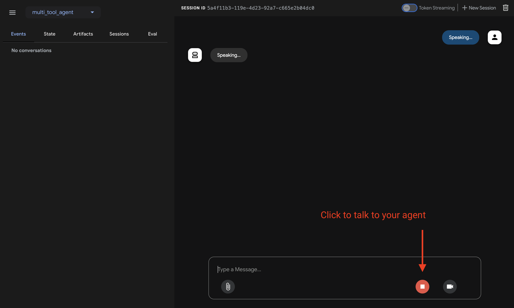
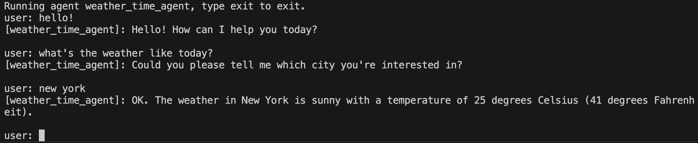
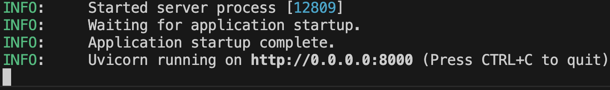

Quickstart¶
This quickstart guides you through installing the Agent Development Kit (ADK), setting up a basic agent with multiple tools, and running it locally either in the terminal or in the interactive, browser-based dev UI.
This quickstart assumes a local IDE (VS Code, PyCharm, etc.) with Python 3.9+ and terminal access. This method runs the application entirely on your machine and is recommended for internal development.
1. Set up Environment & Install ADK¶
Create & Activate Virtual Environment (Recommended):
# Create
python -m venv .venv
# Activate (each new terminal)
# macOS/Linux: source .venv/bin/activate
# Windows CMD: .venv\Scripts\activate.bat
# Windows PowerShell: .venv\Scripts\Activate.ps1
Install ADK:
2. Create Agent Project¶
Project structure¶
You will need to create the following project structure:
Create the folder multi_tool_agent:
Note for Windows users
When using ADK on Windows for the next few steps, we recommend creating
Python files using File Explorer or an IDE because the following commands
(mkdir, echo) typically generate files with null bytes and/or incorrect
encoding.
__init__.py¶
Now create an __init__.py file in the folder:
Your __init__.py should now look like this:
agent.py¶
Create an agent.py file in the same folder:
Copy and paste the following code into agent.py:
import datetime
from zoneinfo import ZoneInfo
from google.adk.agents import Agent
def get_weather(city: str) -> dict:
"""Retrieves the current weather report for a specified city.
Args:
city (str): The name of the city for which to retrieve the weather report.
Returns:
dict: status and result or error msg.
"""
if city.lower() == "new york":
return {
"status": "success",
"report": (
"The weather in New York is sunny with a temperature of 25 degrees"
" Celsius (77 degrees Fahrenheit)."
),
}
else:
return {
"status": "error",
"error_message": f"Weather information for '{city}' is not available.",
}
def get_current_time(city: str) -> dict:
"""Returns the current time in a specified city.
Args:
city (str): The name of the city for which to retrieve the current time.
Returns:
dict: status and result or error msg.
"""
if city.lower() == "new york":
tz_identifier = "America/New_York"
else:
return {
"status": "error",
"error_message": (
f"Sorry, I don't have timezone information for {city}."
),
}
tz = ZoneInfo(tz_identifier)
now = datetime.datetime.now(tz)
report = (
f'The current time in {city} is {now.strftime("%Y-%m-%d %H:%M:%S %Z%z")}'
)
return {"status": "success", "report": report}
root_agent = Agent(
name="weather_time_agent",
model="gemini-2.0-flash",
description=(
"Agent to answer questions about the time and weather in a city."
),
instruction=(
"You are a helpful agent who can answer user questions about the time and weather in a city."
),
tools=[get_weather, get_current_time],
)
.env¶
Create a .env file in the same folder:
More instructions about this file are described in the next section on Set up the model.

3. Set up the model¶
Your agent's ability to understand user requests and generate responses is powered by a Large Language Model (LLM). Your agent needs to make secure calls to this external LLM service, which requires authentication credentials. Without valid authentication, the LLM service will deny the agent's requests, and the agent will be unable to function.
- Get an API key from Google AI Studio.
-
Open the
.envfile located inside (multi_tool_agent/) and copy-paste the following code. -
Replace
GOOGLE_API_KEYwith your actualAPI KEY.
- You need an existing
Google Cloud account and a
project.
- Set up a Google Cloud project
- Set up the gcloud CLI
- Authenticate to Google Cloud, from the terminal by running
gcloud auth login. - Enable the Vertex AI API.
-
Open the
.envfile located inside (multi_tool_agent/). Copy-paste the following code and update the project ID and location.
4. Run Your Agent¶
Using the terminal, navigate to the parent directory of your agent project
(e.g. using cd ..):
There are multiple ways to interact with your agent:
Run the following command to launch the dev UI.
Step 1: Open the URL provided (usually http://localhost:8000 or
http://127.0.0.1:8000) directly in your browser.
Step 2. In the top-left corner of the UI, you can select your agent in the dropdown. Select "multi_tool_agent".
Troubleshooting
If you do not see "multi_tool_agent" in the dropdown menu, make sure you
are running adk web in the parent folder of your agent folder
(i.e. the parent folder of multi_tool_agent).
Step 3. Now you can chat with your agent using the textbox:

Step 4. You can also inspect individual function calls, responses and model responses by clicking on the actions:

Step 5. You can also enable your microphone and talk to your agent:
Model support for voice/video streaming
In order to use voice/video streaming in ADK, you will need to use Gemini models that support the Live API. You can find the model ID(s) that supports the Gemini Live API in the documentation:
You can then replace the model string in root_agent in the agent.py file you created earlier (jump to section). Your code should look something like:

Run the following command, to chat with your Weather agent.

To exit, use Cmd/Ctrl+C.
adk api_server enables you to create a local FastAPI server in a single
command, enabling you to test local cURL requests before you deploy your
agent.

To learn how to use adk api_server for testing, refer to the
documentation on testing.
📝 Example prompts to try¶
- What is the weather in New York?
- What is the time in New York?
- What is the weather in Paris?
- What is the time in Paris?
🎉 Congratulations!¶
You've successfully created and interacted with your first agent using ADK!
🛣️ Next steps¶
- Go to the tutorial: Learn how to add memory, session, state to your agent: tutorial.
- Delve into advanced configuration: Explore the setup section for deeper dives into project structure, configuration, and other interfaces.
- Understand Core Concepts: Learn about agents concepts.